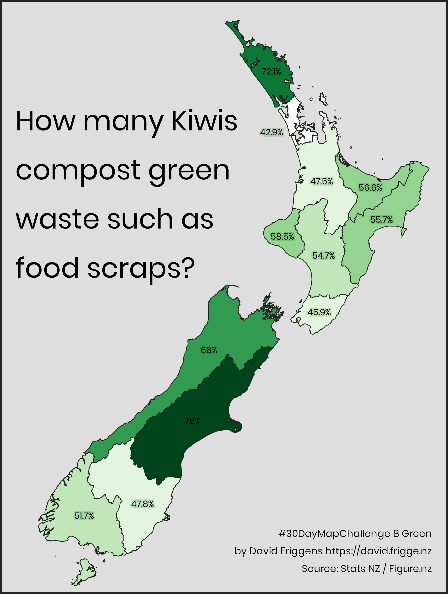
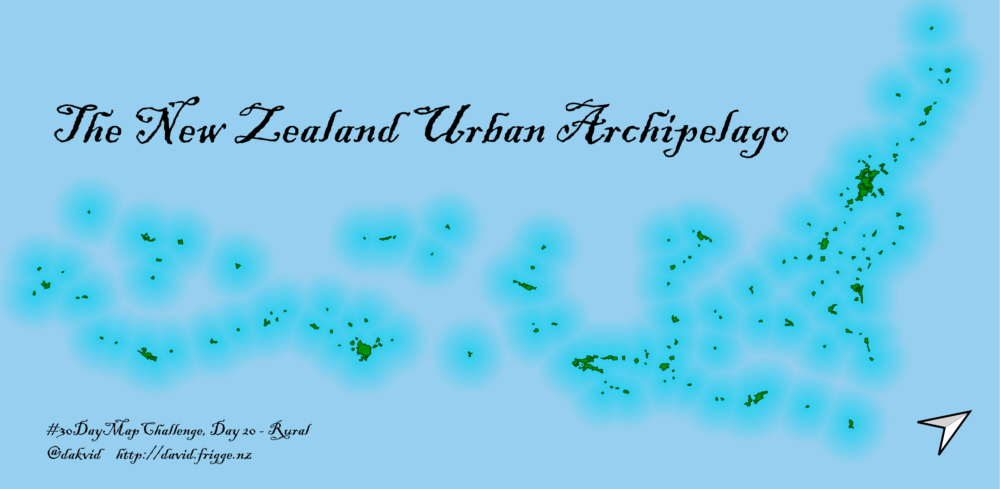
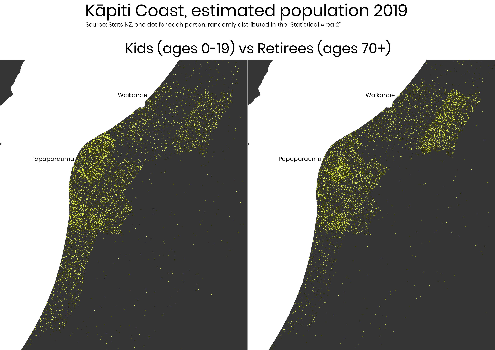

30 Day Map Challenge
David Friggens
November 2019
Introduction
My attempts at #30DayMapChallenge, issued by Topi Tjukanov.

To see what other people are doing, check out the amazing curation by Aurelien Chaumet.
I started halfway through, with the intention of where time and energy allowed.
8. Green
Proportion of New Zealanders who compost green waste, by region. Initially intended for Day 21, Environment.
Data prepared in R (code) and map created with QGIS.

14. Boundaries
Animation of Carterton District small area boundaries: 2017 Area Unit vs 2018 Statistical Area 2, as Stats NZ has introduced a new geographical classification for New Zealand.
[R code] (I haven’t copied the data files here, as they’re large, but they were all downloaded from Stats NZ)

17. Zones
New Zealand’s Exclusive Economic Zone. My first QGIS map, and a bit of a failure. I got 25% of what I wanted in QGIS, another 25% in Inkscape, and the remainder traded for sleep. But I learned things, which is the whole point of this exercise.

18. Globe
Showing the distance between Antarctic territories and their controlling countries. Not mentioning Norway’s Peter I Island nor the conflict between Chile, Argentina and the UK.
[R code] Quickly done in R with the threejs package after getting 90% there in QGIS and losing it all (unsaved!) in a crash.
19. Urban
Auckland urban area has the same population as the next 12 biggest New Zealand cities. (Or at least it did before recently revised official figures.) A few months ago I made this map for work with R, here I’ve remade it with QGIS. (PDF version too)

20. Rural
Why not map … no rural areas? I imagined New Zealand’s urban areas as an archipelago. Starting to feel more familiar with QGIS. (PDF version too)

23. Population
Inspired by the beautiful dot density maps by Chris McDowall in the amazing book We Are Here and that Jack Zhao presented recently at FOSS4G SOTM Oceania (video to come), here’s my first attempt. We see all the kids in the Kāpiti Coast (greater Paraparaumu and Waikanae) and all the retired people. As Jack notes, the QGIS “random points in polygon” function won’t let you dot two different categories so I made them separate maps, as opposed to plotting in high density (like Chris), lowering opacity (didn’t seem to help much), or using an unmaintained Python library (like Jack).

24. Statistics
Being pressed for time I tried a variation of the previous one. “Millennials vs Boomers” was actually my first thought on this idea, and Queenstown has one of the most noticable differences in the country between the generations. The population data is only available in 5 year groups, so I can’t exactly match the generation “definitions” but it’s close enough.